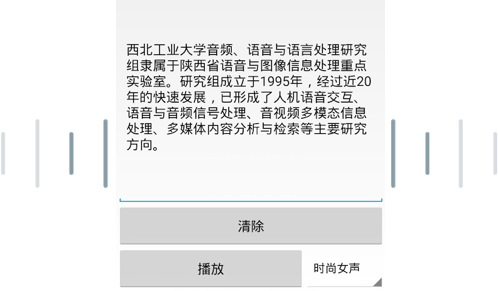

语音合成： 将文字转化成声音的技术
语音合成（Speech Synthesis）或称文语转换（Text to Speech, TTS），其目标是用计算机合成出自然的人类的语音，及给定文本输入，合成出相应的语音。
应用场景
-
语音对话
机器会把合适的应答话语变成输出的语音与你交流。
-
信息朗读
短信/新闻/聊天文本 -- 各种文字信息，皆可以让机器用语音读出。
语音合成APP下载

语音合成Android版APP
扫码直接下载
语音合成在线体验
请输入要合成的文本，并点击播放按钮试听。
- 目前仅支持HTML5浏览器（Chrome或Firefox），如不能正常使用，请更新浏览器至最新版本。
- 目前仅支持校园网使用，如需要在校外体验，请使用西工大VPN登陆。
开发者文档

权限说明
| 变量名 | 含义 |
|---|---|
| WRITE_EXTERNAL_STORAGE | 往文件内写入数据的权限 |
| MOUNT_UNMOUNT_FILESYSTEMS | 创建文件权限 |
| RECORD_AUDIO | 录音权限 |
| INTERNET | 互联网权限 |
| ACCESS_NETWORK_STATE | 获取网络状态权限 |
| ACCESS_WIFI_STATE | 获取无线网络状态权限 |
API指南
public NWPUTalker(String path,String name)
说明：初始化类。
参数格式如下：
| 参数名 | 类型 | 说明 |
|---|---|---|
| path | String | 合成结果保存位置 |
| name | String | 文件名称 |
返回值：无
public void getSpeech(String message,int model)
说明：得到服务器合成结果，并保存。
参数格式如下：
| 参数名 | 类型 | 说明 |
|---|---|---|
| message | String | 要合成的文本 |
| model | int | 0：表示合成女声；1：表示合成男声。 |
返回值：无
public boolean isRecieved()
说明：合成状态。
参数：无
返回值
- false - 没有接受到结果或者正在接收。
- true - 已接收到合成结果。